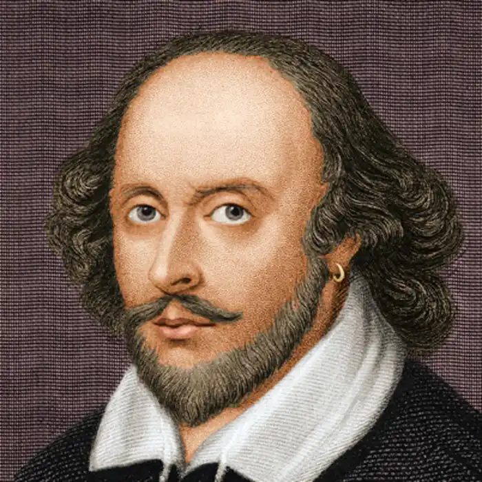

ВІЛЬЯМ ШЕКСПІР
(1564-1616)
Творчість Шекспіра, якого критик В. Бєлінський назвав "яскравою зорею й урочистим світанком ери нового, справжнього мистецтва", є найвищим досягненням європейської літератури доби Відродження. Якщо могутня фігура Данте позначає собою початок Ренесансу, то титанічна фігура Шекспіра вінчає його кінець і увінчує його в історії світової культури. Спадщина його набула світового значення, вплинула на творчість численних митців світового значення і зберігає свою актуальність до нашого часу. Найкращі театри світу незмінно включають в свій репертуар його п'єси, а роль Гамлета мріє зіграти хіба що не кожний актор. Не дивлячись на світовий розголос драматургії і поезії Шекспіра, про самого нього відомого не так вже і багато. Хрестоматійні дані такі. Народився Шекспір 23 квітня 1564 р. у Стретфорді-на-Ейвоні в родині ремісника і торговця. Вчився у місцевій граматичній школі, де вивчали рідну мову, а також грецьку і латинську за єдиним підручником — Біблією. За одними даними школу не закінчив, бо батько через фінансові ускладнення забрав Вільяма до себе помічником. За іншими ж, після закінчення школи був навіть помічником шкільного учителя. У вісімнадцятирічному віці оженився на Енн Хетауей, яка була на вісім років старшою за нього. Через три роки після одруження покинув Стретфорд. Перші його друковані твори з'являються тільки в 1594 році. Біографи припускають, що за цей період він якийсь час був актором мандрівної трупи, 3 1590 р. працював у різних театрах Лондона, а з 1594 вступив у найкращу лондонську трупу Джеймса Бербеджа. З моменту побудови Бербеджем театру "Глобус", тобто з 1599 р. і до 1621 р. життя його пов'язане з цим театром, пайщиком і актором і драматургом якого він є. Сім'я його весь цей час залишалася в Стретфорді, куди він повертається, припинивши театральну і творчу діяльність, і де вмирає 23 квітня (у день свого народження) 1612 року у п'ятидесятидвохрічному віці. Його драматургічна і поетична спадщина, згідно "шекспірівського канону" (першого повного видання творів Шекспіра, здійсненого у 1623р.) складається з 37 драм, 154 сонетів та двох поем — "Венера і Адоні" і "Знеславлена Лукреція". Всі драматичні твори Шекспіра написані білим віршем з використанням прози. Поєднання віршів і прози є характерною рисою шекспірівської драматургії, зумовленою як художнім матеріалом, так і естетичними завданнями. Творчості неперевершеного драматурга і блискучого майстра сонета присвячено тисячі книг. Цікаво, що на долю лише однієї, до цього часу, невирішеної проблеми шекспірознавства, припадає понад 4500 праць. І проблема ця, як не дивно, стосується саме авторства шекспірівських творів: хто ж їх автор — сам Вільям Шекспір чи хтось інший. На сьогодні налічується 58 претендентів, серед яких фігурують такі імена, як філософ Френсіс Бекон, лорди Саутгемптон, Ретленд, граф Дербі і навіть королева Єлизавета. Основні анти шекспірівські аргументи обумовлені такими фактами. Справжнє прізвище Вільяма, яке значиться в книзі церковних записів про народження і яке збереглося на п'яти ділових паперах у вигляді кострубатих підписів, Шакспер, що принципово відрізняється від Шекспір. Шекспір — ім'я смислове і перекладається як "той, хто потрясає списом". З'явилось воно вже в лондонський період життя Вільяма, коли він за допомогою якихось знатних покровителів отримав сімейний герб, на якому було зображено вершника з піднятим списом у руці. Показово, що більшість виданих в той час шекспірівських творів підписані іменем William Shakespeare, що підкреслює його смислове значення і більше нагадує псевдонім, бо особисті імена так не писались. Викликає подив, що не збереглось жодного рядка, написаного рукою Шекспіра. Більш серйозні сумніви щодо шекспірівського авторства викликає те, що Вільям ніде не вчився, окрім граматичної школи, і ніде не бував за межами Англії. В той же час шекспірівські твори вражають неперевершеною художньою майстерністю, масштабністю мислення та філософською художньою глибиною проникнення в найважливіші проблеми буття. Вони свідчать не тільки про геніальність їх автора, але й про енциклопедизм його знань, яким не володів жоден з його сучасників. Словник Шекспіра налічує понад 20 тисяч слів, в той час як у Френсіса Бекона лише 8 тисяч, у Віктора Гюго — 9 тисяч. Свідчать вони і про те, що він знав французьку, італійську, грецьку, латинську мови, добре був обізнаний з античною міфологією, творами Гомера, Овідія, Плавта, Сенеки, Монтеня, Рабле і багатьох інших. До того ж Шекспір вільно почував себе в англійській історії, юриспруденції, риториці, медицині, тонкощах придворного етикету, в житті і звичках знатних осіб. Переважна більшість цих знань в ті часи могла бути одержана тільки в університетах, в яких, як відомо, Шекспір ніколи не навчався. Остання версія авторства шекспірівських творів з'явилась в 2004 р. Вона найбільш аргументована і доказова і належить ученому секретареві Шекспірівської комісії при Академії наук Росії Іллі Гілілову, який виклав її в книзі "Гра про Вільяма Шекспіра, або Таємниця Великого Фенікса". Спираючись на численні матеріали і нові знахідки, він доводить, що за ім'ям Шекспіра криється блискучий молодий аристократ граф Ретленд, близький друг лорда Саутгемптона. Цих двох аристократів зв'язувало не тільки соціальне походження, а й вік (Ретленд був молодшим лише на три роки), і палка любов до театру (при їх фінансовій участі був збудований театр "Глобус", де саме відбулись прем'єри всіх шекспірівських п'єс). Ретленд, був всебічно обізнаною людиною: він вчився в Падуанському університеті; в списках якого за 1596 рік разом з його іменем значаться імена Розенкранца і Гільденстерна, виведених пізніше в трагедії "Гамлет"; вчився в Кембріджському і Оксфордському університетах; виконував королівські доручення при коронованих особах (зокрема, очолював офіційну місію в Датське королівство в червні 1603 р.). За І. Пліловим, Ретленд використовував спритного актора Шекспіра, щоб передавати свої п'єси у театр. З його смертю в 1612 р. завершується і творча діяльність Шекспіра, який у цьому ж році покидає Лондон і більше нічого не пише. Але хто б не стояв за цим всесвітньо відомим іменем, незаперечним є той факт, що шекспірівські твори у своїй сукупності з надзвичайною силою виразності відбили всю гаму ренесансних роздумів і почуттів — від беззастережного уславлення людини, здатної піднятися силою свого духу і розуму на рівень богоподібного створення, до глибоких розчарувань і сумнівів в божественності її природи. У зв'язку з цим творчий шлях Шекспіра традиційно поділяють на три періоди. До першого періоду (1590-1600) відносять драми-хроніки (9), комедії (10), трагедії (3), обидві поеми — "Венера і Адоніс" (1592), "Зганьблена Лукреція" (1593) та сонети (1593-1598). Хроніки, з яких Шекспір розпочав свою творчість, були популярним жанром у його попередників і сучасників, бо вони відповідали на загострений інтерес публіки до своєї історії і політичних проблем сучасності у період напруженої боротьби Англії з Іспанією. Одна за однією з'являються драми-хроніки, особливість яких є вміння драматурга масштабно малювати епоху живими і яскравими барвами, поєднуючи соціальне тло з долею конкретних персонажів: "Генріх VI, частина 2" (1590), "Генріх VI, частина 3" (1591), "Генріх VI, частина 1" (1593), "Ричард НІ" (1594), "Ричард II" (1595), "Король Джон" (1596), "Генріх IV, частина 2" (1597), "Генріх IV, частина 2" (1598) і "Генріх V" (1598). Паралельно з хроніками Шекспір пише цілу низку комедій: "Комедія помилок" (1592), "Приборкання непокірної" (1593), "Два веронці" (1594), "Марні зусилля кохання" (1594), "Сон літньої ночі" (1595), "Венеціанський купець" (1596), "Багато галасу даремно" (1599), "Віндзорські витівниці" (1598), "Як вам це подобається" (1599) і "Дванадцята ніч" (1600), а також три трагедії: "Тіт Андронік" (1593), "Ромео і Джульєтта" (1594) і "Юлій Цезар" (1598). Загальний характер творів цього періоду можна визначити як оптимістичний, забарвлений радісним сприйняттям життя у всій його розмаїтості, вірою у торжество розумного і доброго. Гуманістичним пафосом позначені також поеми і сонети, які відкривають реалістичністю своєї поетики новий етап у розвитку поезії Ренесансу. Сонети Шекспіра утворюють сюжетний цикл, побудований на розвитку відносин між поетом, другом і "смуглявою леді". В сонетах постає складний і багатий світ ренесансної людини з її всеохоплюючим поглядом на світ, активним відношенням до життя, багатством душевних почуттів і переживань. Другий період творчості Шекспіра (1601-1608 pp.) позначений заглибленням поета в аналіз трагічних суперечностей людини, які з усією силою виявились під кінець Ренесансу. Навіть три комедії, написані в цей час, ("Троїл і Крессіда" (1602); "Кінець діло вінчає" (1603); "Міра заміру" (1603) несуть на собі печать трагічного світосприйняття. Драматургічний геній Шекспіра найповніше проявився саме в трагедіях цього періоду: "Гамлет" (1601), "Отелло" (1604), "Король Лір" (1605), "Мак бет" (1606), "Антоній і Клеопатра" (1607), "Коріолан" (1607), "Тімон Афінський" (1608). Квінтесенцією трагічного світовідчуття цих творів може слугувати сонет № 66, написаний значно раніше: Я кличу смерть — дивитися набридло На жебри і приниження чеснот, На безтурботне і вельможне бидло, На правоту, що їй затисли рот, На честь фальшиву, на дівочу вроду Поганьблену, на зраду в пишноті, На правду, що підлоті на вподобу В бруд обертає почуття святі, І на мистецтво під п'ятою влади, І на талант під наглядом шпика, І на порядність, що безбожно краде, І на добро, що в зла за служана! Я від всього цього помер би нині, Та як тебе лишити в самоті?! (Переклад Д. Павличка). І, нарешті, третій, романтичний період, який охоплює 1609— 1612 роки. В цей час він створює чотири трагікомедії, або романтичні драми: "Перікл"(1609), "Цимбелін"(1610), "Зимова казка" (1611); "Буря" (1612) і історичну-драму "Генріх VIII" В трагікомедія панує атмосфера казково-фантастичного, в них добро і справедливість завжди перемагають сили зла. Так "цар драматичних поетів" (В. Бєлінський) до останнього свого твору залишається вірним світлим ідеалам гуманістичного мистецтва Ренесансу. Серед знаменитих трагедій Шекспіра найбільшою популярністю на протязі віків користуються "Ромео і Джульєтта" і "Гамлет". Трагедія "Ромео і Джульєтта" була написана в середині 90-х років, в перший, так званий, оптимістичний період його творчості, найбільш просякнутий ренесансним пафосом віри в людину і її безмежні можливості. В центрі трагедії, я